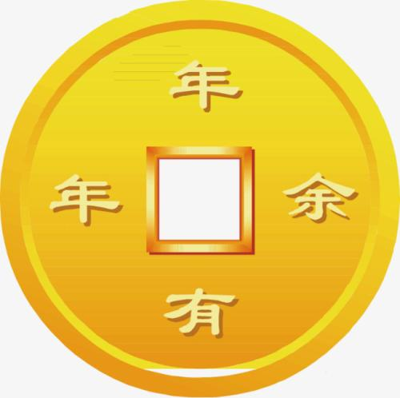

Stone Giant Suv Car
Coming to life as a chunk of stone, Tiny's origins are a mystery on which he continually speculates. He is a Stone Giant now, but what did he used to be? A splinter broken from a Golem's heel? A shard swept from a gargoyle-sculptor's workshop? A fragment of the Oracular Visage of Garthos? A deep curiosity drives him, and he travels the world tirelessly seeking his origins, his parentage, his people. As he roams, he gathers weight and size; the forces that weather lesser rocks, instead cause Tiny to grow and ever grow.
以一团石头的形式出现的生命体，小小不断思索他的起源，但这始终是个谜。现在的他是个石巨人，但过去是什么呢？从土傀儡的脚后跟掉落的碎片？从制造石像鬼的工房被打扫出来的碎屑？神圣预言石的表层之砂？受到强烈的好奇心驱使，他不知疲倦的环游世界，寻找着他的起源，他的出身，和他的种族。在旅途中，他变得越来越庞大，不过路上的风雨吹打掉了他身上的石头，所以他不停的吸收新的岩石，永远在长大。
Spectre
Just as higher states of energy seek a lower level, the Spectre known as Mercurial is a being of intense and violent energy who finds herself irresistibly drawn to scenes of strife as they unfold in the physical world. While her normal spectral state transcends sensory limitations, each time she takes on a physical manifestation, she is stricken by a loss of self--though not of purpose. In the clash of combat, her identity shatters and reconfigures, and she begins to regain awareness. She grasps that she is Mercurial the Spectre--and that all of her Haunts are but shadows of the one true Spectre. Focus comes in the struggle for survival; her true mind reasserts itself; until in the final moments of victory or defeat, she transcends matter and is restored once more to her eternal form.
和所有强大的能量都喜欢欺凌弱小一样，被称为墨丘利的幽鬼也是一个拥有着强横能量的存在，同样的，她对现实世界中的冲突和纷争无比着迷。然而她平时的幽鬼形态超越了常人的感知范围，因此每当她以实体形态出现时，她不得不损失一部分自我能量——尽管她也不愿意。在战斗中，她的自我意识逐渐散落并重新聚合，她也开始有了意识。她意识到了自己是幽鬼墨丘利——其他所有的鬼影都只是她自我的阴影。出于重新凝聚的打算，她开始专注，她的心智也在不断的成熟。只有等到她取得胜利或者彻底失败时，她那超物质的形态才会得以重聚。
Ancient Apparition
Kaldr, the Ancient Apparition, is an image projected from outside time. He springs from the cold, infinite void that both predates the universe and awaits its end. Kaldr is, Kaldr was, Kaldr shall be...and what we perceive, powerful as it appears to us, is but the faintest faded echo of the true, eternal Kaldr. Some believe that as the cosmos ages and approaches its final moments, the brightness and power of Kaldr will also intensify--that the Ancient Apparition will grow younger and stronger as eternity's end draws nigh. His grip of ice will bring all matter to a stop, his image will cast a light too terrible to behold. An Apparition no longer!
卡德尔，极寒幽魂，是时光之外的冰冷投影。他来自寒冷的无尽虚空，目睹宇宙诞生，见证宇宙终结。卡德尔是夕在，今在，永在的无上力量...我们的所有认知，所有自认为正确的强大的事物，在永恒的卡德尔看来，不过是最细微最无力的附和。有人相信，随着宇宙的老化并走向衰亡，卡德尔的力量和光芒也将变得更强——极寒幽魂将更加年轻，更加强大。他对冰霜的控制能够冻结一切事物，他的投影放出的光芒异常夺目。他将不再是幽魂，而是神!
Weaver
The fabric of creation needs constant care, lest it grow tattered; for when it unravels, whole worlds come undone. It is the work of the Weavers to keep the fabric tight, to repair worn spots in the mesh of reality. They also defend from the things that gnaw and lay their eggs in frayed regions, whose young can quickly devour an entire universe if the Weavers let their attention lapse. Skitskurr was a master Weaver, charged with keep one small patch of creation tightly woven and unfaded. But the job was not enough to satisfy. It nagged him that the original work of creation all lay in the past; the Loom had done its work and travelled on. He wanted to create rather than merely maintain--to weave worlds of his own devising. He began making small changes to his domain, but the thrill of creation proved addictive, and his strokes became bolder, pulling against the pattern that the Loom had woven. The guardians came, with their scissors, and Weaver's world was pared off, snipped from the cosmic tapestry, which they rewove without him in it. Skitskurr found himself alone, apart from his kind, a state that would have been torment for any other Weaver. But Skitskurr rejoiced, for now he was free. Free to create for himself, to begin anew. The raw materials he needed to weave a new reality were all around him. All he had to do was tear apart this old world at the seams.
创世之纱需要长期细心的照料，以防止其变得残破；因为一旦它散开了，整个世界就将毁于一旦。编织者的工作就是保持创世之纱的紧密，用现实之网修补它的破损。他们同样要防止那些在创世之纱的缺口上产卵或者侵蚀创世之纱的虫子，只要编织者稍微分心，这些家伙的幼虫就能吞噬掉整个宇宙。斯吉茨格尔是一名大师级的编织者，负责维护一块小补丁的紧密。然而这项任务并不能满足他，他经常唠叨过去那些原始的创造工作，对干完活就走人的世界纺织者也是颇有微词。他想创造，不想只是维护——他想按自己的设计编织出自己的世界。他开始在他负责的区域上做手脚，逐渐不能自拔，他的胆子也愈发的大，甚至私自改动了世界纺织者编织的图案。最后，守卫者来了，毁掉了编织者所作的一切，直接从创世之纱上去除了这一块，然后重新编织，却不让他参与其中。斯吉茨格尔现在孤身一人，被种群所弃，换做任何其他编织者，都会备受折磨。然而斯吉茨格尔却无比愉悦，因为他终于自由了，能够自由的创造，重头开始。他创造新世界所需的所有材料都触手可及。他只需要从缺口处将现在的世界撕裂。
Doom Bringer
A towering being of unimaginable evil, Lucifer the Doom Bringer marches the farthest reaches of the world in search of new and exciting ways to satisfy his taste for unrest and greed. Once a feared leader in the army of the Purgers of the Realm, Doom left his position as a comrade of fellow demonic warriors as he simply could not bear the thought of sharing the glory of pillaging and feats of destruction with other lowly demons. Despite no longer leading an army, Doom is a fearful foe in combat, possessing mastery of hellish magic and physical attacks - eventually, the world will belong to Doom.
一个邪恶程度超乎想象的存在——末日使者路西法在世界各地不停寻找着新的方法来满足他的贪婪和对骚乱的热衷。他曾经是其所在国度中备受畏惧的灭劫军团统帅，然而末日使者后来却离开了他的将军职位，丢下了一帮恶魔战士，原因很简单，他无法与一帮低级恶魔分享掠夺和毁灭带来的所谓荣耀。尽管他不再是军队的统帅了，末日使者在战斗中仍然是个令人恐惧的对手，他拥有极高的肉搏技巧，还掌握了邪恶的地狱魔法——最终，整个世界将为他所有。
Dragon Knight
After years on the trail of a legendary Eldwurm, the Knight Davion found himself facing a disappointing foe: the dreaded Slyrak had grown ancient and frail, its wings tattered, its few remaining scales stricken with scale-rot, its fangs ground to nubs, and its fire-gouts no more threatening than a pack of wet matchsticks. Seeing no honor to be gained in dragon-murder, Knight Davion prepared to turn away and leave his old foe to die in peace. But a voice crept into his thoughts, and Slyrak gave a whispered plea that Davion might honor him with death in combat. Davion agreed, and found himself rewarded beyond expectation for his act of mercy: As he sank his blade in Slyrak's breast, the dragon pierced Davion's throat with a talon. As their blood mingled, Slyrak sent his power out along the Blood Route, sending all its strength and centuries of wisdom to the knight. The dragon's death sealed their bond and Dragon Knight was born. The ancient power slumbers in the Dragon Knight Davion, waking when he calls it. Or perhaps it is the Dragon that calls the Knight...
在传说中的龙冢——厄尔多姆试炼多年以后，骑士戴维安发现自己的对手愈发不能令他满意了：过去那个让人闻风丧胆的神龙斯莱瑞克已经变得苍老而脆弱，它的双翼已经残破，它所剩不多的龙鳞也开始腐烂，它的爪子变得肿大老化，它曾经引以为傲的火焰吐息现在威力和进水了的火柴差不多。戴维安觉得这样的屠龙行径已经不能给他带来任何荣誉，转身就要离开，让他的老对手安静的死去。但是他的脑海里传来了一个声音，斯莱瑞克低声的乞求着，让戴维安允许它光荣的战死。戴维安同意了，随即发现他的怜悯给他带来了意外的收获：当他将手中的锋刃刺入斯莱瑞克的胸膛时，龙使出最后的力量用龙爪刺穿了他的喉咙，随着他们血液的融合，斯莱瑞克将它所有的力量随着血液赐予了戴维安，也赐予了他龙族千万年来的智慧。龙的死去将他们的命运完全的绑定在了一起，龙骑士横空出世。古老的力量在龙骑士戴维安的身体里沉睡着，当他需要力量时则完全复苏。而龙族之力，也唤醒了骑士的所有力量...
Venomancer
In the Acid Jungles of Jidi Isle, poison runs in the veins and bubbles in the guts of every creature that scuttles, climbs or swoops between fluorescent vines dripping with caustic sap. Yet even in this toxic menagerie, Venomancer is acknowledged as the most venomous. Ages ago, an Herbalist named Lesale crossed the Bay of Fradj by coracle, searching for potent essences that might be extracted from bark and root, and found instead a nightmare transformation. Two leagues into Jidi's jungle, Lesale encountered a reptile camouflaged as an epiphyte, which stung him as he mistakenly plucked it. In desperation, he used his partial knowledge of the jungle's herbal bounty, mixing the venom of the (swiftly throttled) reptile with the nectar of an armored orchid, to compound an antidote. In the moments before a black paralysis claimed him completely, he injected himself by orchid-thorn, and instantly fell into a coma. Seventeen years later, something stirred in the spot where he had fallen, throwing off the years' accumulation of humus: Venomancer. Lesale the Herbalist no longer--but Lesale the Deathbringer. His mind was all but erased, and his flesh had been consumed and replaced by a new type of matter--one fusing the venom of the reptile with the poisonous integument of the orchid. Jidi's Acid Jungles knew a new master, one before whom even the most vicious predators soon learned to bow or burrow for their lives. The lurid isle proved too confining, and some human hunger deep in the heart of the Venomancer drove Lesale out in search of new poisons--and new deaths to bring.
Beast Master
卡洛克自出生伊始就被当做兽婴。他的母亲在他出生时就死去；他的父亲是狂王斯洛姆的马蹄铁匠，在他五岁时被马群践踏致死。后来，卡洛克将自己卖到国王的动物园干活，在那里，他和宫廷里面饲养的狮子，猩猩，野鹿以及其他一些很少见的甚至传说中的野兽一起长大。在他七岁那年，一个冒险者带着一只没人见过的野兽来觐见国王。当这只野兽被国王的链条锁住的时候，它说话了，乞求自由，然而它的嘴并没有张开。国王大笑，命令野兽表演助兴，遭到拒绝以后，国王用他的疯狂权杖狠狠的抽打了野兽，并把它关在了兽栏里面。接下来的几个月里，卡洛克每天都给这个受伤的野兽偷偷的带去食物和药物，然而这一切只能减缓野兽的死亡。这只野兽和卡洛克开始了交流，无言的交流，他们之间的情感纽带也随着时间的推移而加深，最后卡洛克发现他竟然能够和宫廷动物园里面的所有动物交流。在那只野兽死去的晚上，卡洛克狂怒无比，他煽动了所有的动物一起反叛，并且将它们的笼子打开，在宫廷广场上大开杀戒。狂王在动乱中受伤。在混乱之中，一只皇家雄鹿在这个救了它的男孩面前屈膝，让他以兽王的身份骑上它，带他跃过了堡垒的高墙，逃出生天。现在，兽王卡洛克已经成长为一个男子汉，并且仍然能够自由的和野生动物交谈。他已经成为了拥有自然狂猛野性的战士。
Dark Seer
Fast when he needs to be, and a cunning strategist, Ish'Kafel the Dark Seer requires no edged weapons to vanquish his enemies, relying instead on the strength of his powerful mind. His talent lies in his ability to maneuver the fight to his advantage. Hailing from a place he calls 'The Land behind the wall,' Dark Seer remains an outsider here—a warrior from a realm beyond the veil of this reality. Once a great general among his people, and a valiant defender of the god-king Damathryx, Dark Seer’s army was wiped out by a much larger force in the final days of the Great Boundaries War. Facing certain defeat, he made one last desperate act: he led the enemy forces into the maze between the walls. At the last moment, just before capture, he crossed over—then sealed the walls forever in an explosive release of dark energy. When the dust settled, he saw that he had saved his people but found himself blinking at the sun of a different world, with no way to return. Now he is committed to proving his worth as a military strategist, and vows to show that he’s the greatest tactician this strange new world has ever seen.
迅捷如风，足智多谋，黑暗贤者依什卡菲尔并不需要多么锋利的武器来搏斗，他总是运用强大的心灵之力来征服敌人。他有着颠覆战局使之对己方有利的天才。迎着欢呼和敬意，他从一个叫做“幻墙之末”的世界走了出来，并不热衷于这个世界的纷争——他是一个来自现实世界之外的勇者。曾经，黑暗贤者是备受人民尊敬的将军，是神王达玛瑞克斯麾下英勇的保卫者，然而他的军队在边境大战的最后几天，被一股更为强大的力量悉数歼灭。面临如此惨败，他绝望的做出了最后一个决定：引诱着敌军进入了幻墙迷宫。在他即将被捕的前一刻，他穿过幻墙，释放出强大的黑暗能量，将幻墙永远的封印起来。当飞扬的尘土归于平静以后，他发现他成功的拯救了自己的人民，而自己却沐浴在另一个世界的阳光下，亦真亦幻，无法回到现实世界。现在，他决心以一名战略家的身份来证明自己的价值，并且立誓要让这个新的世界见识他那伟大的谋略。